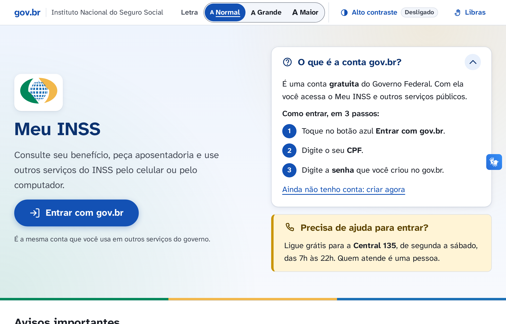
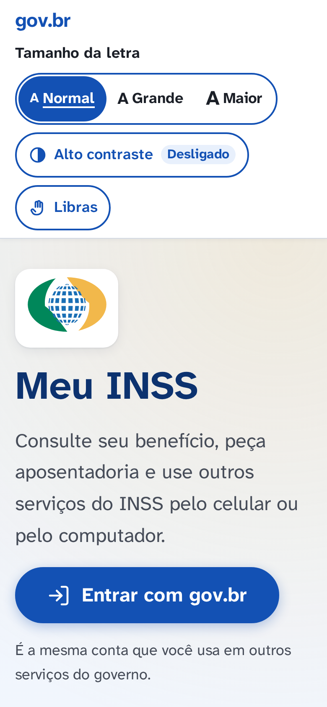
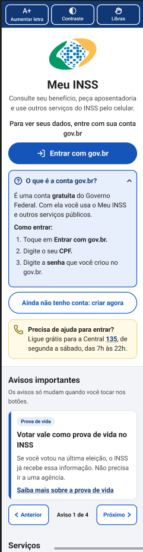
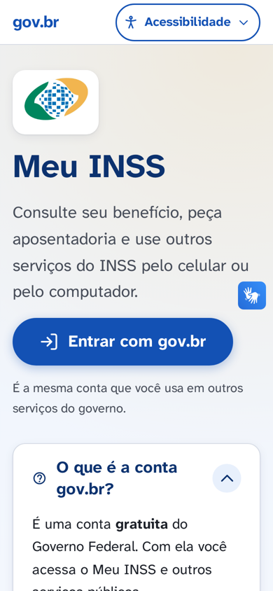
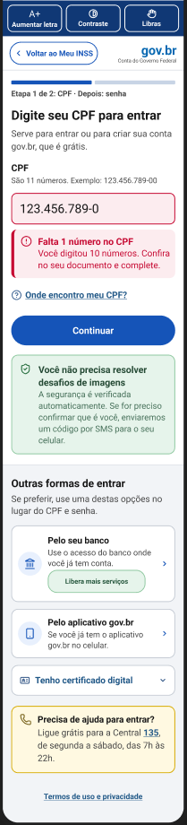
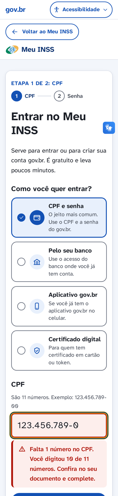

Releitura das telas de entrada do Meu INSS para o público idoso, com quatro componentes WAI-ARIA, seguindo a WCAG 2.2 (nível AA) e o eMAG 3.1.
O Meu INSS é usado majoritariamente por aposentados, pensionistas e pessoas
perto de se aposentar. É um público que, com a idade, costuma ter visão
reduzida, tremor nas mãos, memória de curto prazo
mais curta e menos familiaridade com ícones e gestos de
aplicativos. Nosso objetivo foi refazer as telas de entrada (início, CPF, senha e
área logada) mantendo a identidade visual do INSS e do gov.br — marca verde,
amarela e azul, azul #1351B4 do Padrão Digital de Governo — mas
resolvendo essas barreiras.


| Dificuldade | Solução na interface | WCAG |
|---|---|---|
| Enxergar texto pequeno ou claro | Letra base de 18px, três tamanhos (Normal, Grande, Maior) escolhidos num grupo de opções; contraste de texto acima de 7:1 na maior parte; tema de alto contraste preto/amarelo; fonte Atkinson Hyperlegible, criada para baixa visão (diferencia I/l/1 e 0/O — importante para CPF). | 1.4.3, 1.4.4, 1.4.6 |
| Acertar alvos pequenos com a mão trêmula | Todo controle clicável tem no mínimo 48×48px; opções de rádio são cartões inteiros clicáveis, não bolinhas de 16px. | 2.5.8 |
| Entender ícones sozinhos | Todo ícone vem com texto visível ("Buscar", "Avisos", "Menu"). Ícones são decorativos (aria-hidden). | 1.1.1, 2.5.3 |
| Conteúdo que se move sozinho | O carrossel automático virou um conjunto de abas: nada muda sem a pessoa pedir. | 2.2.2, 3.2.1 |
| Errar e não saber o que fazer | Mensagens que ensinam ("Falta 1 número no CPF. Você digitou 10 de 11"); o foco volta ao campo; erro com ícone, borda e texto, não só cor. | 3.3.1, 3.3.3, 1.4.1 |
| Sair da conta sem querer | Diálogo de confirmação com o foco na opção segura ("Não, continuar aqui"). | 3.3.4 |
| Perder-se em muitos menus | Menu com subitens agrupando serviços em 3 grupos; passo a passo visível "Etapa 1 de 2". | 2.4.5, 2.4.8 |
| Texto que estoura a tela ao ampliar | Layout em rem e grades elásticas: com a letra no máximo, abas e cartões passam para uma coluna, sem rolagem lateral. | 1.4.10 |
WAI-ARIA (Accessible Rich Internet Applications) é a especificação do W3C que permite descrever para tecnologias assistivas — leitores de tela como NVDA, TalkBack e VoiceOver — componentes que o HTML não tem prontos: abas, menus, grupos de opções estilizados, diálogos. Ela atua em três frentes:
role="tab", role="menuitem".aria-checked, aria-selected, aria-expanded.aria-labelledby, aria-controls, aria-haspopup, aria-modal.[aria-checked="true"], [aria-selected="true"] etc.,
então o que se vê é sempre o mesmo que o leitor de tela fala.Implementamos quatro componentes ARIA completos:
| Componente | Onde aparece | Arquivo |
|---|---|---|
1. Grupo de opções (radiogroup) | Tamanho da letra (topo de todas as telas) e "Como você quer entrar?" (tela de CPF) | GrupoOpcoes.jsx |
2. Menu com subitens (menubar / menu) | Menu principal da área logada | MenuPrincipal.jsx |
3. Abas (tablist) | Avisos importantes, na tela inicial | Avisos.jsx |
4. Diálogo modal (dialog) | Confirmação "Quer mesmo sair da conta?" | Dialogo.jsx |
| Onde | Atributos | Para quê |
|---|---|---|
| Acordeões (“O que é a conta gov.br?”, “Onde encontro o meu CPF?”) | aria-expanded, aria-controls | Padrão Disclosure: informa se o bloco está aberto ou fechado. |
| Botão “Acessibilidade” no celular | aria-expanded, aria-controls | Padrão Disclosure: no celular, as opções de letra, contraste e Libras ficam num painel que abre e fecha; Esc fecha e devolve o foco ao botão. No computador, as opções ficam numa linha fina no topo, como no portal gov.br. |
| Botão “Libras” | — | Abre o VLibras, tradutor oficial do Governo Federal, que traduz o texto da página para Libras com um avatar 3D. |
| Botão “Alto contraste” | aria-pressed | Botão alternador: “Alto contraste, botão de alternância, pressionado”. O nome não muda ao alternar, como recomenda o APG. |
| Botão “Menu” no celular e “Mostrar senha” | aria-expanded, aria-pressed | Estado do menu aberto / senha visível. |
| Campos de CPF e senha | aria-describedby, aria-invalid, role="alert" | A dica e o erro são lidos junto com o campo; o erro é anunciado assim que aparece. |
| Avisos de sistema | role="status" + aria-live="polite" | Anuncia mudanças sem foco próprio: entrou, saiu, contraste ligado. |
| Marca do INSS e ícones | alt; aria-hidden | A marca tem texto alternativo (ou alt="" quando o nome “Meu INSS” já está escrito ao lado); ícones ao lado de texto são escondidos para não repetir. |
| Botão “Avisos” com selo “1” | aria-label="Avisos: 1 não lido" | O número do selo é só visual; o nome falado inclui a contagem. |
| Princípio | O que fizemos |
|---|---|
| Perceptível | Contraste ≥ 4.5:1 em todo texto (maior parte ≥ 7:1); tema alto contraste; letra ampliável em 3 níveis com layout em rem; nada informado só por cor; textos alternativos; refluxo sem rolagem lateral até a letra máxima em tela de 390px. |
| Operável | Tudo funciona pelo teclado; foco visível com anel duplo azul + amarelo; link “Ir direto para o conteúdo”; alvos ≥ 48px; nada se move sozinho; sem tempo limite; prefers-reduced-motion respeitado; troca de tela move o foco para o título e atualiza o <title>. |
| Compreensível | Linguagem simples e direta; passo a passo “Etapa 1 de 2”; erros que dizem o que fazer; confirmação antes de ação difícil de desfazer; CPF confirmado na tela de senha; lang="pt-BR". |
| Robusto | HTML semântico (header, nav, main, footer, títulos sem pular nível); ARIA conforme o APG; estados visuais desenhados a partir dos atributos ARIA. |
Também seguimos recomendações do eMAG 3.1: barra de acessibilidade no topo com contraste e tamanho de letra (1.9), atalho para o conteúdo (1.5), botão de Libras com o VLibras oficial e preferências salvas para a próxima visita.
aria-checked, aria-selected e aria-expanded mudam junto.O ponto de partida foi um protótipo de celular feito no Figma. Na hora de construir o site, revisamos cada tela pensando no público idoso e nos componentes WAI-ARIA. As telas de senha e da área logada não estavam no protótipo.

Figma — início
Final — início
Figma — CPF
Final — CPF| Figma | Versão final | Por quê |
|---|---|---|
| Três botões grandes no topo: “A+ Aumentar letra”, “Contraste” e “Libras” | Faixa fina no estilo gov.br: “gov.br | Instituto Nacional do Seguro Social” e os controles à direita | A barra ocupava muito espaço e chamava mais atenção que o serviço |
| “Aumentar letra” troca de tamanho a cada toque | Grupo de opções Normal / Grande / Maior, todos visíveis (radiogroup) | A pessoa vê quantos tamanhos existem e escolhe direto |
| “Contraste” muda só de cor quando ligado | “Alto contraste” com o estado escrito e aria-pressed | Não depender só da cor (WCAG 1.4.1) |
| “Libras” sem função | Abre o VLibras, tradutor oficial do Governo Federal | Libras funcionando de verdade |
| Mesma barra no celular | No celular, o botão “Acessibilidade” abre um painel com as opções grandes | Libera o topo da tela |
| Figma | Versão final |
|---|---|
| Logo e título centralizados, em coluna única | Faixa de destaque com o fio verde, amarelo e azul da marca; duas colunas no computador |
| “Ainda não tenho conta: criar agora” como botão contornado | Link dentro do bloco “O que é a conta gov.br?” |
| Passos de entrada em lista numerada simples | Números em círculos azuis, mais fáceis de acompanhar |
| Avisos em carrossel com Anterior / Próximo e “Aviso 1 de 4” | Avisos em abas (tablist), todos os assuntos à vista. O carrossel escondia os avisos seguintes e obrigava a passar um por um |
| Seção “Serviços” com “Encontre uma Agência” e “Ver todos os serviços” | “Serviços que não precisam de senha”, com “Consultar Pedido” no lugar de “Encontre uma Agência”; grade de 3 colunas no computador |
| Figma | Versão final |
|---|---|
| Título “Digite seu CPF para entrar” | Título “Entrar no Meu INSS” |
| Barra de progresso: “Etapa 1 de 2: CPF · Depois: senha” | Etapas com círculos numerados (1 CPF → 2 Senha) |
| Cabeçalho com a marca gov.br | Cabeçalho com a logo do INSS e “Meu INSS” |
| “Outras formas de entrar” no fim da página, em cartões | “Como você quer entrar?” no topo, como grupo de opções (radiogroup) com CPF já marcado |
| Link “Onde encontro meu CPF?” acima do botão | Bloco que abre e fecha, abaixo do botão |
| Campo e mensagens soltos na página | Formulário em cartão branco sobre fundo cinza |
menubar).dialog).